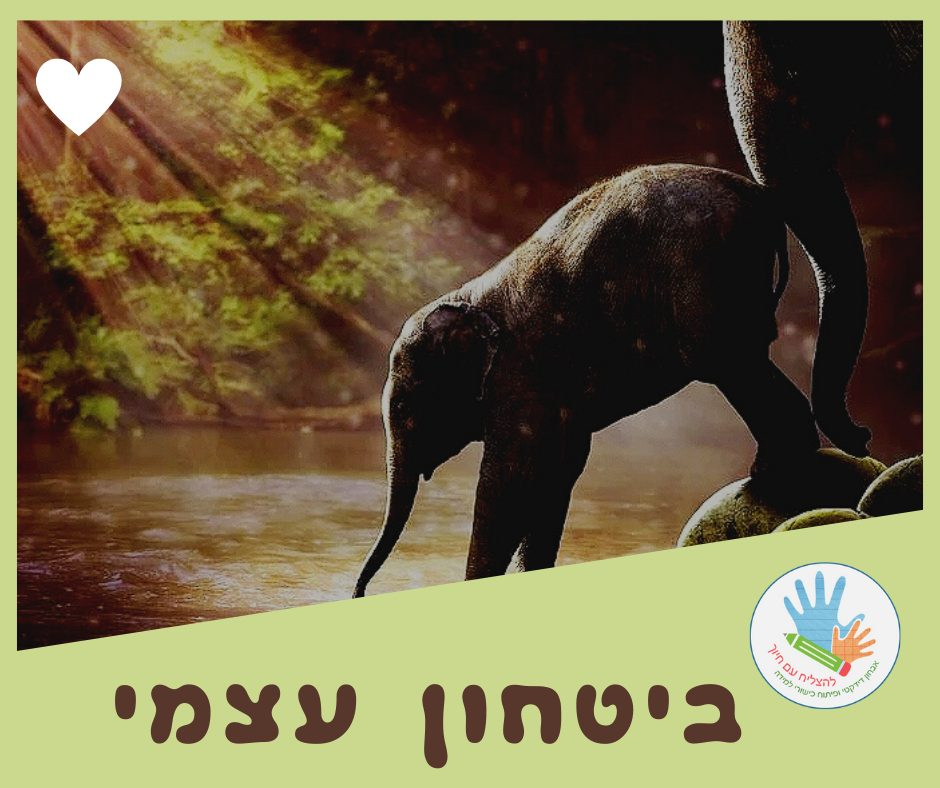

ביטחון עצמי

אחרי לא מעט זמן שלא עדכנתי פוסטים בבלוג..
החלטתי לשתף אתכם בערכים שמלווים אותי,
וחשוב לי להעביר אותם הלאה כשאני מלווה את התלמידים ואת המורות שלי.
הראשון הוא ערך ה- #ביטחון
#ביטחון - תחושת ודאות על ידיעה או על אמונה
#ביטחון_עצמי - האמונה שיש לאדם ביכולתו להצליח במעשיו, בצדקת דרכו, או בנכונות החלטותיו.
(מתוך: ויקימילון)
מגיל קטן הביטחון העצמי שלנו מתגבש ונבנה, לאור חוויות ואתגרים שאנחנו עוברים. לכל חוויה שכזו נלווים גם פידבקים מהסביבה - מחזקים מעודדים אדישים מזלזלים ..
כל אלה משפיעים על הדרך שבה אנחנו תופסים את עצמנו ומתמודדים עם מצבים בחיים.
כשתלמידים מגיעים אלי,
הם לרוב חוששים, חסרי ביטחון ועם תחושת מסוגלות עצמית נמוכה.
הם למודי אכזבות, ולפעמים כבר אין להם ציפייה שיוכלו להצליח..
בתהליך שאנחנו עוברים יחד, שהוא דידקטי בהגדרתו, נכנס לא מעט רגש ופן טיפולי.
השיעורים מותאמים לילדים וההתקדמות היא לפי הקצב שלהם.
אחרי חווית ההצלחה הראשונה,
גם אם היא הכי קטנה!
נדלק #אור
אור שגורם לניצנוץ בעיניים,
לתחושת גאווה, הצלחתי!
ולרצון להמשיך הלאה, לעוד חוויות כאלה!
השברים נאספים,
הם צוברים חוויות חדשות,
הביטחון עצמי מתגבש לו מחדש
ומסייע להם #להעז יותר בפעמים הבאות
ו #להצליח_עם_חיוך
זוכרים חוויה כזאת,
שהאירה ושינתה לכם את החיים?